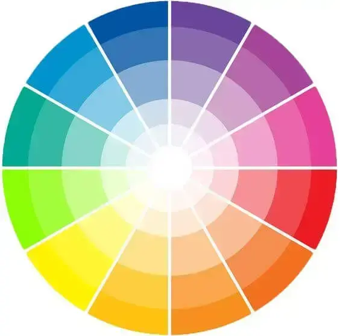

azul, rosa, amarelo, vermelho, laranja etc.
azul é reprentado por #0000ff: 00nada de vermelho 00nada de verde e ff tudo de azul, #ffffff estourado tudo branco
clicando na barra de cores, na parte de cima da barrinha eu posso alterar, para rgb( red,green,blue), hsl:matiz, saturaçao e luminosidade(hue, saturation, luminosity) e hexadécimal

no caderno tem a classificaçao das cores, primárias, secundárias e etc.
clique para página 2